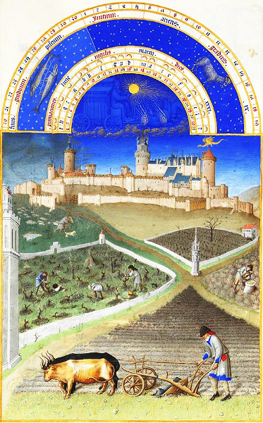
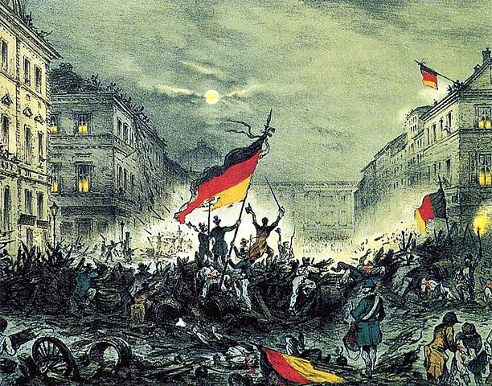

-
The Vorwerk and Feudalism
Some of the places from where our ancestors had migrated were known by the name of 'Vorwerk'. These were in the northern and north-eastern parts of what later became Germany:Toiling in the soil
(from the Book of Hours of the Duke of Berry, Les Très Riches Heures du duc de Berry)
Vorwerk Ahrensbök (Süchting)
Vorwerk Potzlow (Riek)
Vorwerk Siebershof (Pieper)
Vorwerk Charlottenhof (Lobegeier)
Vorwerk Götschendorf (Lobegeier)
Vorwerk Stegelitz (Lobegeier)
The Vorwerk was a locality with an administrative system which has no direct correspondence in the English language. The closest would be a Monastic 'Grange' which was a monastery's outlying farm ruled according to the manorial system, now recognised as identical to feudalism. When the monasteries lost their lands and power, those places became owned by feudal lords, the self same people who had already been in power. In the 14th century in Germany's neighbour, Poland, the term 'Folwark', derived from the German word 'Vorwerk', denoted a fortified advanced work of a castle (a place receiving the first brunt of any attack), and later a manor house managing a farm estate. To make the estate immensely profitable, formerly free peasants were forced into becoming serfs and by law were reduced to slavery which effectively prevented them from owning land or changing masters.
Whether or not that was the same in Germany, is not altogether clear but there was doubtlessly the same sort of exploitation and enforced dependence placed upon workers on the lands of the Vorwerk. In essence, it was a legally bound and enforced subjugation of farm working families, which was also inherited, meaning that the children born into it were also bound by law to the farm, as part of the property ('Gut') of the farm-holder who was their lord ('Gutsherr'). There were only two components to this feudal system. The first and foremost was the landowner who had all the rights. The second was his property, including all his workers, who were required to give their labour as payment for their sheer existence, simply for being part of that property, like a farm animal.
Official documents referred to a Vorwerk by a Latin word, 'pertinentia', which meant (according to Merriam-Webster) "appurtenances belonging to real or personal property and passing with ownership of the property to any new owner". This new type of feudalism was a great improvement for those who benefited from it. Instead of having tenants on the land who then had to pay rent, taxes and duties to the landlord, the worker-families were turned into objects of ownership who gained nothing from their labours. The products of all their efforts went straight to the landlord, for his gain alone. Of course this was open to the cutting of costs when it came to keeping these workers alive. Overcrowded accomodation in very poor conditions, malnourishment, sickness and death, especially of children, were all running rampant.
March 19 1848, Cheering revolutionaries in Berlin
The Beginning of the End
The feudal system came into existence within the midst of a crumbling Roman Empire at a time when the Franks were becoming a power to reckon with. The ruling classes modified and adapted existing power structures into a new method of maintaining their authority and wealth. Central to this was the Roman Villa, its resident landlord and the rental of his lands. Although it was no longer called Roman, not much had changed and it persisted across Europe, within the Holy Roman Empire, for a dozen or more centuries.
The first effective condemnation of feudalism was made by Montesquieu ultimately leading to the outbreak of the French Revolution. This initial seed of awareness planted by Montesquieu in 1748 was then encouraged to grow by Voltaire. The effect of this information hitting Germany early in the 19th century, was to quickly rearrange the structure of exploitation to appear more modern and 'enlightened'. The outcome as we all know, was Capitalism and indirectly, its artificial rival, Communism, to encapsulate any further criticism.
But enough was enough and the French Revolution meant the beginning of the end for feudalism, per se. Early on in the piece, on the night of August 4, 1789, France managed to abolish the last remnants of their feudal system, which was followed one week later by an official decree. This was soon followed by the Napoleonic Wars from 1803 to 1815 which eventually brought about the end of the Holy Roman Empire, sparking further revolutions within newly forming European nations.
By the middle of the nineteenth century there was a great deal of industrialistaion, a new proletariat and the establishment of a poltical institution which led to the dismantling of feudalism, albeit reluctantly. Yet it was deeply ingrained and stubbornly persistent, and in many areas maintained till much later. Scotland, for instance, only saw the very last of it in 2004 with its "Abolition of Feudal Tenure (etc.) Act 2000". The last feudal regime was on the island of Sark which was abolished as late as December 2008.The Final Solution
In a nutshell, serfdom ('Leibeigenschaft' = not owning one's own body) was the lowest rung of the feudal system. The serf ('Leibeigener'), who was simply an agricultural labourer, better known as a peasant, was the legal property of the landlord and bound legally to the land which he was obliged to work. Concurrent to the destruction of the Holy Roman Empire, the emancipation of serfs proceeded slowly in Germany from 1797 to 1830. Having begun in Schleswig, and with Prussia also abolishing serfdom in 1807 with its 'October Edict', the rest of the German states eventually followed suit after 1815.
The nobility who advocated this change were not doing it for humanitarian reasons. They embraced industrialisation as their new source of income, such that their previous agricultural interests were rapidly becoming a liability which they preferred to have cleared out of the way. Unfortunately though, some of those in power still continued on with their feudalism, even though their subordinates were no longer legally their property but were simply designated as 'employed' tenants.
The feudal system itself was finally legally abolished in the German states in 1848. This brought its own bag of woes by decreasing the economic viability of agriculture even further. The newly formed governments saw the only way to terminate the ensuing wretchedness was to physically remove the 'agriculturalists' and 'workmen' from their predicament by arranging their passage to another country. Thus, they were quickly dumped on the east coast of America. This went quite well until the American Revolution broke out.
Consequently, Australia was brought into the equation as a new final destination for these people. An 'assisted' passage to Australia was achieved by appointing migration agents, such as Johann Christian Heussler, who could communicate and arrange operations at both ends of the chain. Heussler was the one who assisted the Piepers and the Schneiders to migrate to Australia. They in turn took the opportunity offered by the Queensland Government to sponsor the rest of their relatives, and helping them arrange further assistance.

About Us
We are the descendants of Anglo-Scottish-Prusso-Germanic Australian migrants who settled in the newly formed colonies of New South Wales and Queensland in the nineteenth century. The idea behind these pages is to present the stories and characters of those early settlers along with information about their origins, descendants, families, whereabouts and activities.There are often themes running through their struggles and achievements telling a tale of resourcefulness and hardships in an alien world. The paradox of Australia as an ancient and raw continent and as a 'New World' portrays a collision of ideals and realities yet still shows a continuity in how those people dealt with everyday life.